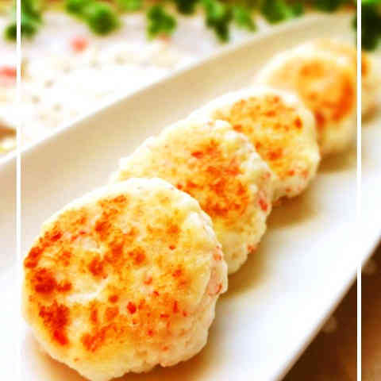
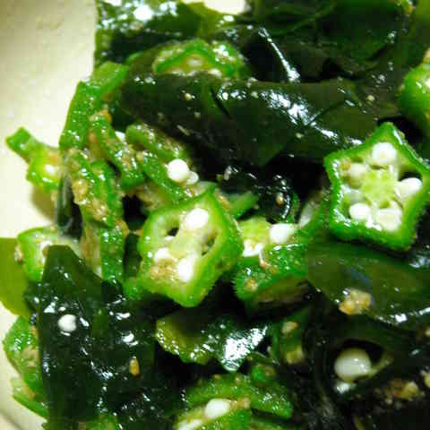

プレミアム献立
一週間の献立を毎週日曜日に更新
プレミアム献立
一週間の献立を毎週日曜日に更新
2018年4月1日(日)~2018年4月7日(土)
-
4/1(日)
 今日の食材
春キャベツ
-
つくれぽ
 469人
469人
-
調理時間
25分 -
カロリー
669kcal
春キャベツと豚肉のピリ辛炒め
-
-
4/2(月)
今日のテーマ
ご飯がすすむ
-
つくれぽ
165人
-
調理時間
30分 -
カロリー
746kcal
鶏肉のオイスターおろし煮
-
-
4/3(水)
今日の食材
アサリ
-
つくれぽ
111人
-
調理時間
35分 -
カロリー
685kcal
菜の花とアサリのさっと和え
-
前週へ
翌週へ
※2014/01/01からのランキングが見れます